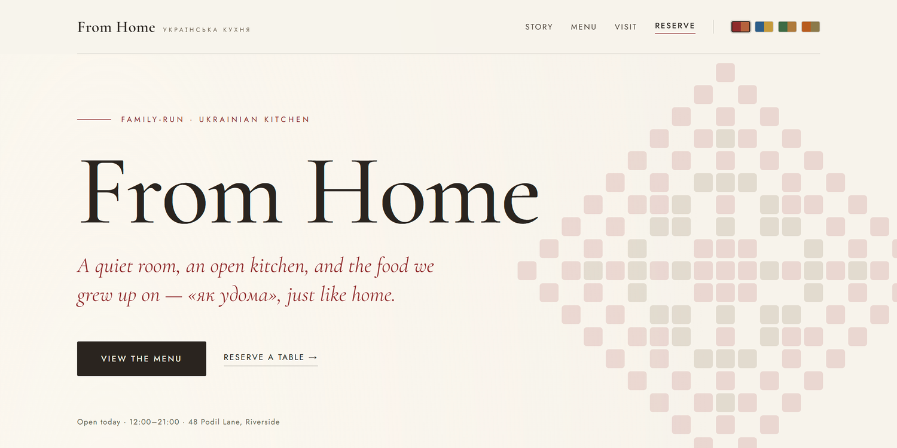
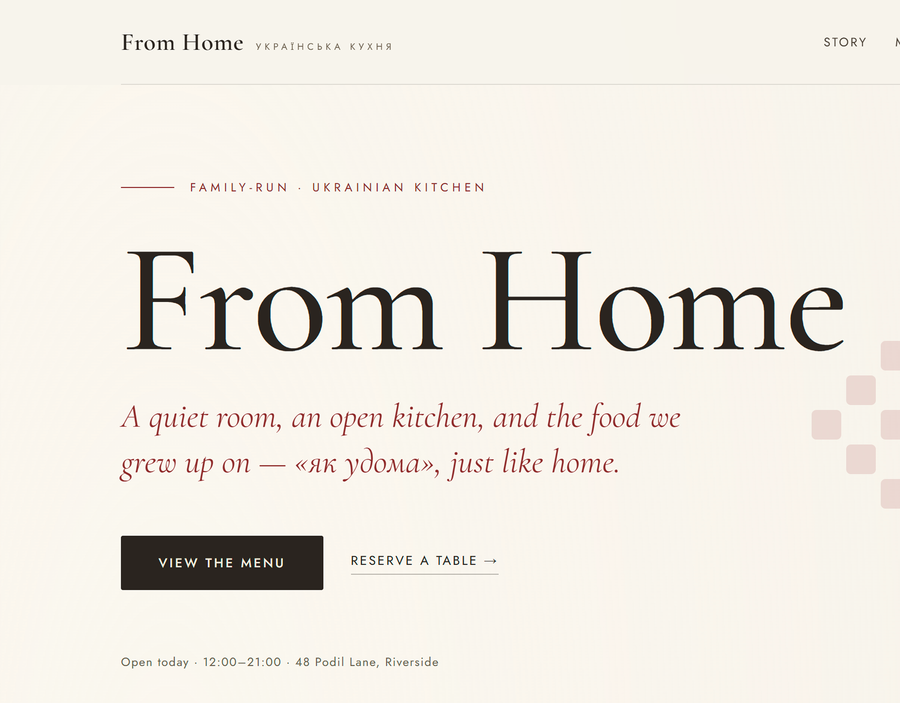
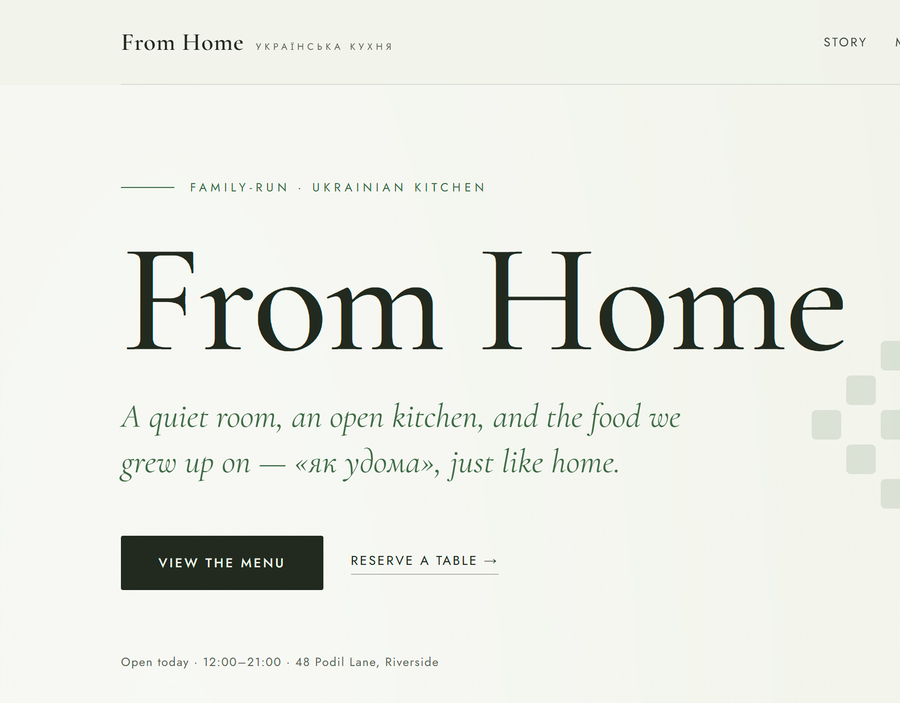
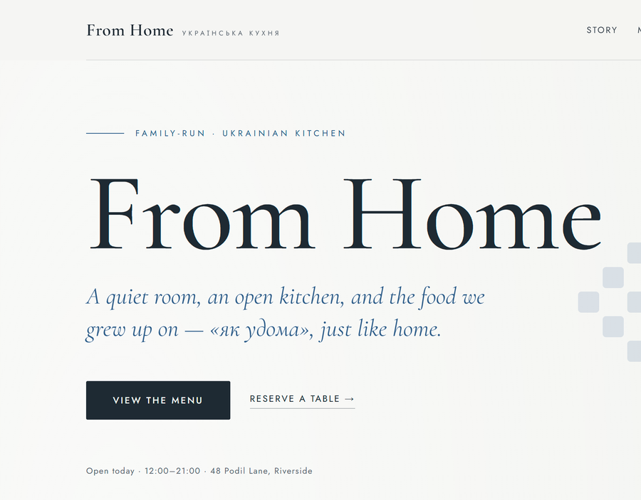
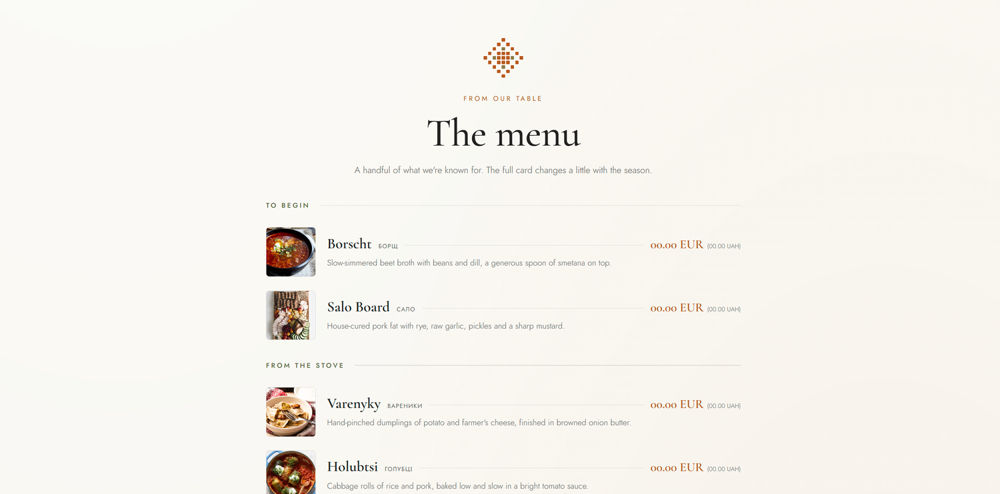
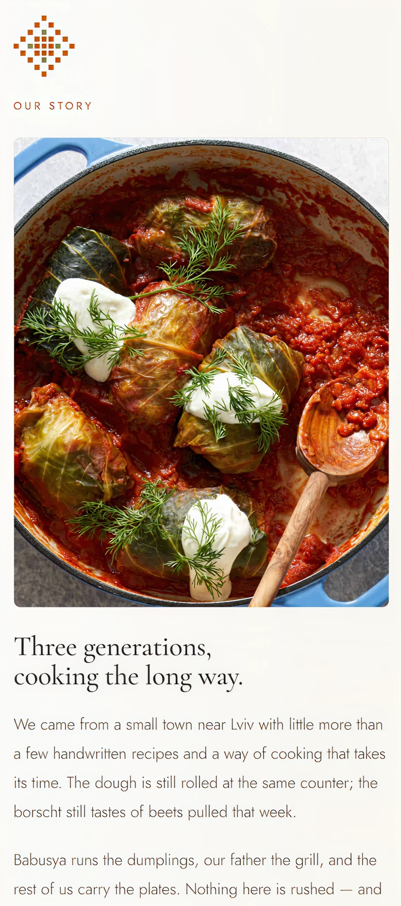

A site for a small, family-run Ukrainian kitchen. Warm and unfussy, with a story, a menu, and a place to book a table — designed and built end to end, with three color versions the client could preview live.

From Home is a family-run Ukrainian restaurant — three generations, recipes from a small town near Lviv, nothing rushed. The site had to feel the same way: warm and personal, not a glossy chain. It needed to tell their story, show a handful of the dishes they're known for, and make it easy to book a table — all without losing the "як удома," just-like-home feeling.
Before building the full site, the client saw three color directions to feel out the mood — each carried through the whole page, with a small embroidered-pixel motif nodding to Ukrainian cross-stitch. They picked the one that felt most like home.

Warm brick red over cream, like a clay hearth — the most appetite-forward and traditional of the three.

A calm herb green with a gold accent — fresh and garden-like, the quietest option.

A deep sky blue with gold — cooler and a touch more formal, a quiet nod to the flag.
Note: these are the directions the client reviewed before the full build — a way to settle the look and feel first.
The menu and story were built to read well on both desktop and phone — long food descriptions, Ukrainian dish names, and prices all holding their shape across screens.
See the example 🡥

We start with a call. From there I land on a few directions you can click through and feel out — three of them, so you can see what fits before anything's built. It's not endless rounds of changes; it's a clear way to find the look you actually want.
If you have photos and copy, send them over — it gives me a better sense of how the finished site will look. But it's genuinely nice-to-have, not something I need to start.
If you don't have it ready, no worries at all. I'll make photos with AI or find something online to build with, and we swap them for the real thing before the project's handed over.
I'll walk you through the small stuff — editing text, swapping images, the day-to-day. And if you'd rather not touch it, we can talk maintenance: send things my way and I'll handle the updates.